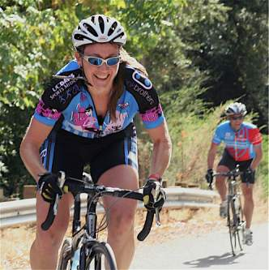

|
2006 Low-Key Hillclimbs Week 4 Results: Highway 9 04 Nov 2006 |
|  |
| Cheryl Hennessy leads Todd Benjamin to the summit. photo by Sheri Greenspan |
Once again, the weather fates smiled upon the Low-Key Hillclimbs, as sunny skies left only the damp roads as a reminder of the past week's rains. At a Low-Key punctual 9:57 am, the White Chariot's horn rang through the land of Saratoga, and the game was on.
The lead group maintained a steady pace up the lower, gradual slopes of Highway 9, a sizeable group until, approaching Redwood Gulch, new series leader Petro Hizalev decided to stretch his legs with an out-of-the-saddle acceleration that had those following looking at each other in disbelief. This broke the previously lead pack into three groups, Petro, Dave Galvin, and Clark Foy in front, followed by a group of approximately 5, then a group of around 7 further back.
From here, the remaining 3 miles became a matter of how much each rider had left in their legs from the earlier pace, the ever-present mileage markers leaving little doubt about what remained.
Among the encouragingly strong turnout of 7 women, Cheryl Hennessy (team: Velo Bella) was fastest on the day, followed by Stephanie Gruszunski and Kelly Kasik.
A highlight of the week was Highway 9's unicyclist show-down between OLH's Steve Nash, and Diablo's Nathan Hoover. Steve proved the faster, yet among unicyclists, frankly, just making it to the top (and back down afterwards) these climbs is sufficiently impressive that it transcends any issue of speed.
Next week, of course, Highway 9's less popular sibling, Bohlman, with its On Orbit cousin. You have been warned...
Thanks to coordinator Pete Heller, with help from Carola Berger, Greg Dougald, John Franklin, Sheri Greenspan, and Leo Menestrina for making today's climb possible!median time = 38:14
pl # rider team category time score 1 93 Petro Hizalev Webcor/Alto Velo 3 30:54 123.76 2 137 Dave Galvin BMC Racing 2 31:26 121.66 3 39 Clark Foy San Jose Bike Club 40+ 31:48 120.26 4 1 Dan Connelly TNT 3 31:55 119.82 5 131 Raffi Jrizian Form Fitness 3 32:25 117.97 6 19 Menso de Jong Santa Cruz Syndicate Junior 32:25 117.97 7 127 Bryan Buck AV: Old Guys Finish 4 32:33 117.49 8 48 David Kelly Webcor/Alto Velo 4 32:33 117.49 9 17 Brian Edwards Hell Riders 25-29 32:48 116.59 10 20 James Porter Western Wheelers Out Of Shape Dads 33:05 115.59 11 97 Greg McQuaid Western Wheelers 35+ 33:13 115.13 12 37 Bill Lloyd Le Matin 1 33:29 114.21 13 45 Rupert Brauch WAV-ARA 3 33:32 114.04 14 54 Justin Lucke Organic Athlete Vegan 33:44 113.36 15 122 Michael Gonia Western Wheelers 40+ 33:50 113.03 16 81 Ramon Alarcon San Jose Bike Club 4 34:11 111.87 17 118 Mike Holt ST Bikes 3 34:21 111.33 18 124 Jeff Farnsworth Western Wheelers 40+ 34:38 110.42 19 16 Peter Mehlitz 45+ 34:39 110.37 20 4 Fred E. Stamm Pen Velo/Kondra 50+ 35:38 107.32 21 123 Earle Baker 36:10 105.74 22 120 Chris May Los Gatos Junior 36:11 105.69 23 35 Ron Brunner Commuter Commuter 36:30 104.77 24 121 Paul C. Janzen Team Torgo 36:40 104.30 25 40 Geo Kitta Pen Velo/Kondra 50+ 37:07 103.03 26 125 Chris Arriola San Jose Bike Club 35+ 37:33 101.84 27 29 Dean Larson Team Dino 40+ 37:45 101.30 28 116 Shance Ordell Western Wheelers 35+ 37:46 101.26 29 67 Martin Hyland Western Wheelers 50+ 37:52 100.99 30 114 Phil Theodore Tribe 38:00 100.64 31 78 Alex Kramer Western Wheelers 5 38:03 100.50 32 2 Kevin Winterfield Low-Key 38:26 99.50 33 128 Randal Buck Old Guys First Time 38:28 99.42 34 129 John Christensen San Jose Bike Club 4 38:48 98.56 35 70 Bob Parker AV: Old Guys Finish 50+ 38:53 98.35 36 115 John Murphy CalTrain 35+ 39:39 96.45 37 86 Alex Matthews No Team Cotter Pin 39:45 96.21 38 90 H. William Mirbach Pen Velo/Kondra 55+ 39:54 95.84 39 117 David Baker Webcor/Alto Velo Slowest Of All 40:01 95.56 40 11 Peter Merril Adobe 50+ 40:30 94.42 41 34 Stephen Fong San Jose Bike Club 5 41:36 91.93 42 138 Javier Szwarcberg Western Wheelers Whatever 41:51 91.38 43 135 Larry Munoz Western Wheelers Viejo 42:12 90.62 44 110 Edward Miller SLACer 65+ 42:44 89.49 45 126 Samual Wilson Webcor/Alto Velo Old 42:57 89.04 46 94 Todd Benjamin 43:40 87.58 47 105 Paul Sudano 58+ 43:47 87.34 48 15 Rich Brunner Cruzie 39ish 45:39 83.77 49 119 J.L. de Jong Meno's Dad Beginner 46:46 81.77 50 133 Michael Svihura Western Wheelers 40+ 47:11 81.05 51 10 Dick Robinson TNT 59+ 48:52 78.26 52 77 Jorge Chang Blubber Busters Infinity 49:31 77.23 53 66 Eric Roodhouse SVTC 49:53 76.66 54 132 Joseph Maurer RUSA 50+ 52:15 73.19 55 25 Tim Porcival Pen Velo/Kondra 5 52:43 72.54 56 79 Steve Nash Unicycle 52:44 72.52 57 89 JT Conklin Identity Engines 35+ 52:55 72.27 58 38 Neil Bliss Platypus Racing Heavyweight 55:27 68.97 59 60 Nathan Hoover Team Cyclops Unicycle 57:07 66.95 60 41 Kwan Low The Cutters 5 58:08 65.78 61 49 Adam Tow Blubber Busters Infinity 68:28 55.85 62 113 Greg Heller Monte Vista Junior 69:39 54.91
median time = 55:09
pl # rider team category time score 1 7 Cheryl Hennessy Velo Bella 35+ 43:36 126.49 2 68 Stephanie Gruszunski Velo Girls 46:53 117.63 3 95 Kelly Kasik 50:15 109.75 4 130 Sue Young GDI Beginner 55:09 100.00 5 111 Pat Parseghian Western Wheelers 50+ 60:02 91.87 6 27 Christine Holmes Librarian 40+ 61:33 89.60 7 134 Rae Chang Blubber Busters Slow 68:27 80.57
pl team score scoring 1 Western Wheelers 343.75 (James Porter, Greg McQuaid, Michael Gonia) 2 Webcor/Alto Velo 336.81 (Petro Hizalev, David Kelly, David Baker) 3 San Jose Bike Club 333.97 (Clark Foy, Ramon Alarcon, Chris Arriola) 4 Pen Velo/Kondra 306.19 (Fred E. Stamm, Geo Kitta, H. William Mirbach) 5 AV: Old Guys Finish 215.84 (Bryan Buck, Bob Parker) 6 Blubber Busters 213.65 (Rae Chang, Jorge Chang, Adam Tow) 7 TNT 198.07 (Dan Connelly, Dick Robinson) 8 Velo Bella 126.49 (Cheryl Hennessy) 9 BMC Racing 121.66 (Dave Galvin) 10 Form Fitness 117.97 (Raffi Jrizian) 10 Santa Cruz Syndicate 117.97 (Menso de Jong) 12 Velo Girls 117.63 (Stephanie Gruszunski) 13 Hell Riders 116.59 (Brian Edwards) 14 Le Matin 114.21 (Bill Lloyd) 15 WAV-ARA 114.04 (Rupert Brauch) 16 Organic Athlete 113.36 (Justin Lucke) 17 ST Bikes 111.33 (Mike Holt) 18 Los Gatos 105.69 (Chris May) 19 Commuter 104.77 (Ron Brunner) 20 Team Torgo 104.30 (Paul C. Janzen) 21 Team Dino 101.30 (Dean Larson) 22 Tribe 100.64 (Phil Theodore) 23 GDI 100.00 (Sue Young) 24 Low-Key 99.50 (Kevin Winterfield) 25 Old Guys 99.42 (Randal Buck) 26 CalTrain 96.45 (John Murphy) 27 No Team 96.21 (Alex Matthews) 28 Adobe 94.42 (Peter Merril) 29 Librarian 89.60 (Christine Holmes) 30 SLACer 89.49 (Edward Miller) 31 Cruzie 83.77 (Rich Brunner) 32 Meno's Dad 81.77 (J.L. de Jong) 33 SVTC 76.66 (Eric Roodhouse) 34 RUSA 73.19 (Joseph Maurer) 35 Identity Engines 72.27 (JT Conklin) 36 Platypus Racing 68.97 (Neil Bliss) 37 Team Cyclops 66.95 (Nathan Hoover) 38 The Cutters 65.78 (Kwan Low) 39 Monte Vista 54.91 (Greg Heller)